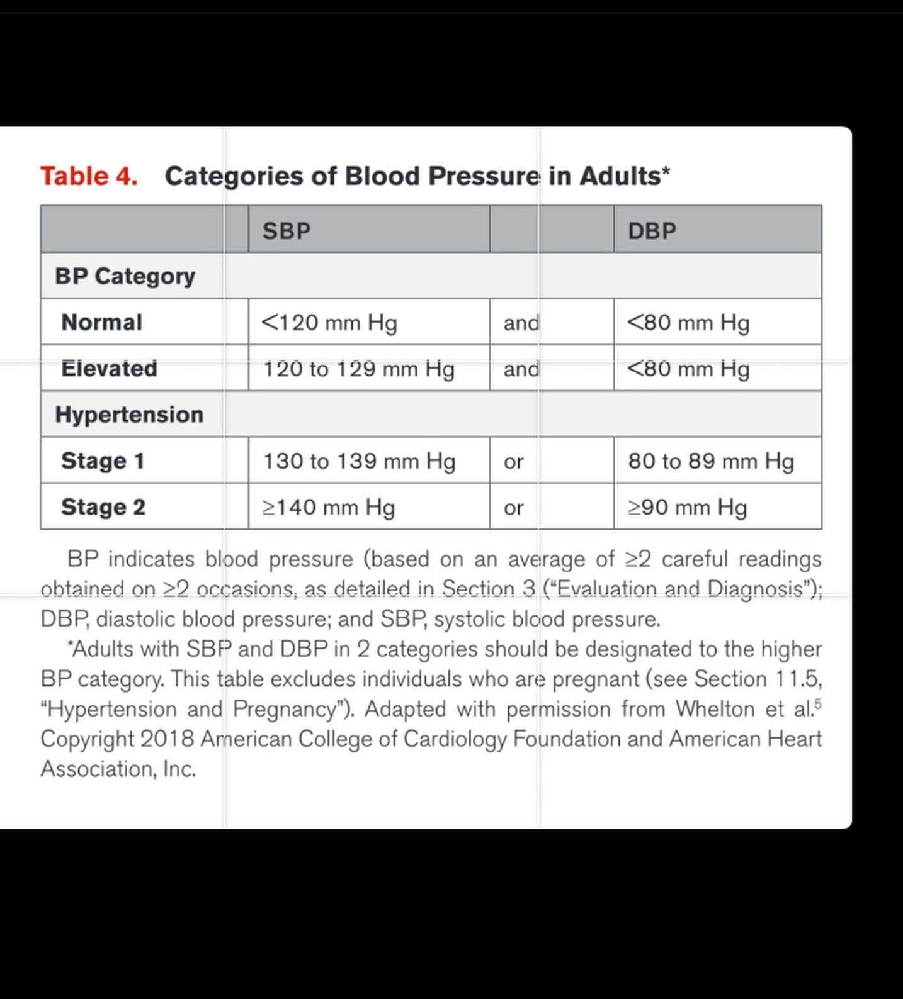

High blood pressure damages the lining of blood vessels, speeds up atherosclerosis, thickens the heart muscle and raises the risk of stroke, heart attack, heart failure, kidney disease and cognitive decline1. It is also extraordinarily common: the 2025 US guideline summary Louis shared says about 57% of men and 53% of women aged 45 to 59 have pressure above 130/80 mmHg, rising to about 84% at ages 75 to 802. A large study of more than 9 million South Korean adults plus US adults found that over 99% of people with a first heart attack, stroke or heart failure had at least one nonoptimal risk factor beforehand, and hypertension was the most common, affecting over 93%3.

The main drug families discussed in the group are ACE inhibitors (such as lisinopril, ramipril and benazepril), ARBs or "sartans" (such as losartan and valsartan), calcium channel blockers (such as amlodipine) and thiazides, with beta-blockers and other agents used in some protocols45678. The group's debate is less about whether to treat and more about how low to aim, which class to prefer, and which combinations people tolerate and stick with.
This article summarises what members have shared; it is not medical advice. Targets, drug choices and doses are decisions for you and your doctor, and the admins repeatedly stress individualisation.
Why the target matters: SPRINT and the below-120 idea
Louis explains that the definition of high blood pressure was lowered because several very large randomized trials showed that treating early and aggressively greatly reduces long-term heart attack and stroke risk15.
The trial most often cited is SPRINT, which compared intensive systolic control (target under 120 mmHg) with standard control (under 140 mmHg). It enrolled adults aged 50 or older with hypertension but without diabetes or a history of stroke9. Gokhan shared two follow-up analyses:
- At age 50, estimated residual survival was 37.3 years with intensive treatment and 34.4 years with standard treatment, a difference of 2.9 years (95% CI 0.9 to 5.0)916.
- Intensive treatment was linked to fewer white matter lesions in frontal and posterior deep white matter and improved blood flow, markers of better brain health. White matter lesions can be associated with Alzheimer's disease, other cognitive impairment and advanced brain aging9.
Gokhan also summarised two videos by Dr. Brad Stanfield that discuss SPRINT and a Chinese follow-up study. They describe a 25 to 27% lower risk of death when the systolic target was below 120 rather than 140, and fewer heart attacks, strokes and cases of dementia1317. These are secondhand video summaries rather than the trial papers, so the exact figures are best checked in the original publications.
Several other posts point the same way for the brain. A Nature Medicine cluster-randomized trial in people with uncontrolled hypertension found that reducing blood pressure substantially lowered the risk of all-cause dementia and of cognitive impairment without dementia18. A Chinese study associated keeping pressure below 130/80 with a 15% lower dementia risk and 16% lower overall cognitive impairment, which is an association, not a trial result19. Higher blood pressure even at age 7 predicted premature cardiovascular death in a cohort of more than 37,000 children followed into their mid-50s20.

Ideal versus treatment target
Gokhan's reading of Stanfield's history of targets is that the most ideal systolic pressure today is under 120, while drug-based therapy targets under 130, since some people do not feel well at 12010. Stanfield's own message, as summarised, is that a target of 120/80 is ideal for most people but treatment should be individualised, particularly in older adults, to avoid side effects such as dizziness and fainting13. Gokhan personally tracks a systolic target under 120 mmHg as part of a regimen designed with his physicians because of his high-risk blood disorder21; that is his own case, not a general rule.
One post Gokhan shared used the PREVENT risk calculator to sort 6,600 people by 10-year cardiovascular risk and then compared intensive (under 120) with standard (under 140) targets at each risk level. The post does not state the results22. The idea that benefit could vary by baseline risk is worth knowing, but the numbers are not in the group's material.
The drug classes
ACE inhibitors
ACE inhibitors reduce the production of angiotensin II, a hormone that narrows blood vessels. They are the class Gokhan and several protocols lean on. The Bale-Doneen protocol aims for systolic pressure under 120, "ideally using an ACE inhibitor," with ARBs, beta-blockers, diuretics and renin inhibitors used as indicated8. Gokhan says he takes an ACE inhibitor alongside low-dose rosuvastatin and fish oil23. Louis also notes that ACE inhibitors may reduce cancer risk, although that comes from a shared overview rather than a trial24.
Two safety points came up:
- Angioedema. A safety post warns that people on lisinopril, ramipril or benazepril can develop sudden swelling of the lips, tongue or throat, even years after starting and often without itching. Risk is higher over 65, in smokers, in people of African descent and in those on immunosuppressants. A new dry cough or hoarse voice can be an early clue, and real swelling or breathing trouble needs emergency care4.
- High potassium. ACE inhibitors can raise blood potassium (hyperkalemia), and the risk rises with potassium-rich foods or other potassium-raising drugs25. This matters for anyone who is also adding potassium through diet, supplements or salt substitutes, which is a conversation to have with a prescriber.
ARBs (angiotensin receptor blockers)
ARBs block the angiotensin II receptor itself, and the American Heart Association guidelines name them a preferred first-line therapy, according to a shared overview of losartan24. Their main selling point in the group is tolerability. A JAMA 2026 network meta-analysis of 716 short-term randomized trials compared dropouts due to side effects across drug classes and combinations. ARB-containing regimens, especially ARB plus a calcium channel blocker, had fewer discontinuations than placebo, while calcium channel blocker monotherapy had more. All regimens raised dizziness, most reduced headache, and several combinations were better tolerated than single drugs26. Louis summarises that ARBs featured in four of the top five best-tolerated regimens and that ARB-based regimens may improve long-term adherence5. This is about tolerability in short trials, not about outcomes such as heart attacks.

Preclinical hints are also circulating. A Rockefeller University study suggests that losartan may stimulate brown fat, which is linked to better insulin sensitivity and lower diabetes and cardiovascular risk. The study is preclinical, and the original ARB and brown fat link came from an analysis of over 100,000 patients27.
ACE inhibitor versus ARB: an unsettled question
A post originally written by Gokhan summarises the evidence on whether the two classes differ for all-cause mortality14:
- Meta-analyses of randomized trials favour ACE inhibitors. A 2012 European Heart Journal meta-analysis of 20 trials and about 159,000 hypertensive patients found a 10% reduction in all-cause mortality with ACE inhibitors (HR 0.90) and none with ARBs (HR 0.99). Later analyses were described as supporting ACE inhibitors. The proposed mechanism is reduced bradykinin breakdown, which adds vasodilation that ARBs lack.
- Head-to-head trials show no difference. A Cochrane meta-analysis of 9 direct comparisons (about 11,000 patients) found RR 0.98, but such trials are few and underpowered for mortality.
- Real-world data point the other way or are neutral. A UK Biobank and China Renal Data System target trial emulation found 5-year mortality of 3.45% with ACE inhibitors versus 3.04% with ARBs (HR 1.13), while an 8-database multinational cohort found no significant difference.
Show data
| Hazard ratio (log scale) | 95% CI | |
|---|---|---|
| *ACE inhibitors | 0.90 | 0.84–0.97 |
| ARBs | 0.99 | 0.94–1.04 |
Show data
| Relative risk / hazard ratio (log scale) | 95% CI | |
|---|---|---|
| 9 head-to-head randomized trials (Cochrane, about 11,000 patients) | 0.98 | 0.88–1.10 |
| Target trial emulation (UK Biobank and China Renal Data System) | 1.13 | 1.07–1.19 |
The post's bottom line is that RCT evidence tends to favour ACE inhibitors, that ARBs are better tolerated (less cough and angioedema), which may explain the more favourable observational results because adherence matters, and that guidelines treat the two as largely interchangeable first-line agents while the mortality question stays unsettled14.
A single anecdote shows how individual these choices are: Dr. Ford Brewer reported switching from an ARB to the ACE inhibitor ramipril as one of several changes alongside low-dose rosuvastatin, omega-3, niacin and weight loss, and saw his CIMT artery age fall by over 20 years. Louis points out that this is a single self-reported case from a clinic that also sells services and supplements, and many changes happened at once, so the drug switch cannot be credited alone2829.
Calcium channel blockers
Amlodipine, a dihydropyridine calcium channel blocker, blocks L-type calcium channels in vascular smooth muscle. Less calcium enters the cells, the muscle relaxes, the arteries widen and resistance falls6. In the tolerability network meta-analysis, calcium channel blocker monotherapy was linked to more discontinuations due to side effects, but pairing one with an ARB produced the best-tolerated regimen overall526.
Thiazides
Evan Levine, in a video Louis shared, argues that thiazides should stop being called "water pills" or diuretics, because that is not how they ultimately lower blood pressure and the label scares people away from what he calls one of the best agents for hypertension7. The posts do not go further into the mechanism, so this is one clinician's view.
Beta-blockers, renin inhibitors and others
These appear mainly as options within comprehensive protocols such as Bale-Doneen, which list ACE inhibitors, ARBs, beta-blockers, diuretics and renin inhibitors "as indicated" for people with coronary disease or hypertension8.
Does the class matter for dementia?
An autopsy cohort study in JAMA Network Open, shared by Louis, compared blood pressure drugs that stimulate angiotensin II signalling (ARBs, thiazides, dihydropyridine calcium channel blockers) with those that inhibit it (ACE inhibitors, beta-blockers, non-dihydropyridine calcium channel blockers). The first group was associated with 14 to 21% lower levels of an Alzheimer's biomarker in several brain regions, and use for 15 years or more with 24% lower arteriolosclerosis (small-vessel disease)30. This is observational, based on autopsy data and biomarkers rather than diagnosed dementia, and it sits uneasily next to the mortality data favouring ACE inhibitors. It is a reminder that "best" depends on the outcome being measured.
How the group thinks about combining drugs
The group's material does not lay out a stepwise dosing algorithm, and the admins do not present one. What it does show:
- Combinations can be better tolerated than single drugs. The 716-trial network meta-analysis found several combination regimens were better tolerated than monotherapies, with ARB plus calcium channel blocker topping the list526.
- Blood pressure drugs are one layer of a multi-drug prevention plan. The Bale-Doneen protocol targets a systolic pressure under 120, treats lipids with statins and other agents, adds low-dose aspirin for secondary prevention, and uses insulin sensitizers and anti-inflammatories. In its 2016 cohort, carotid intima-media thickness fell substantially over a median of 3 years, though the package cannot tell you what any single drug contributed8.
- Mixing needs care. ACE inhibitors raise potassium, which interacts with potassium-rich foods and other potassium-raising drugs25, so combinations should be reviewed with a prescriber.
Measurement and lifestyle: the other half of blood pressure control
Measure accurately
Louis shared a Hypertension paper showing that images of blood pressure measurement online often show incorrect technique, and notes that many healthcare providers do not measure it properly either31. Gokhan also shared a JAMA Cardiology analysis of the FDA-cleared Apple Watch hypertension alert: 69% of alerted people would have hypertension and 79% of non-alerted people would not. He calls it better than relying on a doctor to catch it but worse than a proper cuff, and the guideline standard remains cuff measurement32. Stanfield's advice, as summarised, includes regular home monitoring13.
Potassium and salt
- The AHA recommends 3.5 to 5 g of potassium per day, preferably from food, for adults with elevated or high blood pressure who are otherwise healthy33.
- A 2013 BMJ review of 22 randomized trials found about 3.5 mmHg lower systolic pressure with more potassium, and roughly 7 mmHg at 90 to 120 mmol/day in people with hypertension. The shared post notes Americans average about 2,500 mg/day against Adequate Intakes of 3,400 mg (men) and 2,600 mg (women), and that the effect was specific to those with elevated pressure11.
- In the SSaSS trial of 15,249 stroke survivors in northern China, a potassium-enriched salt substitute lowered recurrent stroke by 14% and death by 12% with a small blood pressure drop and no increase in hyperkalemia. Louis uses a 50/50 sodium and potassium chloride blend himself34.
- Gokhan anecdotally saw his systolic reading fall to 107 after starting potassium supplements, from the mid-120s before and about 140 five years earlier10. This is one person's experience.
- A high-salt diet has also been reported to trigger brain inflammation that raises pressure, in a news report on research highlighting the brain's role in hypertension35.
Other measures with modest effects
- Magnesium. An umbrella meta-analysis found doses of at least 400 mg/day for at least 12 weeks lowered systolic pressure by 6.38 mmHg and diastolic by 3.71 mmHg, mostly in people with metabolic disorders and likely low magnesium. It is not strong enough to be monotherapy36.
- Hibiscus. Gokhan cites a meta-analysis of 17 trials with a 7.10 mmHg systolic reduction, greatest in those with elevated baseline pressure, and drinks 1 to 2 mugs daily37. Louis asks whether a concentrated supplement exists38.
- Cocoa flavanols. An updated meta-analysis of 25 trials found about 2.7 mmHg systolic and 1.8 mmHg diastolic reductions39. The largest cocoa trial found cocoa extract may prevent high blood pressure only in those who start with healthy pressure40.
- Isometric wall squats. A review found static isometric exercise lowered resting pressure more than cardio, intervals or weights, with about 9.4 mmHg lower systolic in one trial. The routine is four 2-minute holds with 2-minute rests, three times weekly, without holding your breath, and people with heart disease should check with a doctor first12.
- Others. Home HEPA air purifiers lowered systolic pressure by about 3 mmHg in a JACC study, which Louis calls small but real41. A kimchi meta-analysis of nine studies found 3.48 mmHg lower systolic, mostly in Korean populations42. A single sauna session lowered systolic pressure from 137 to 130 in 102 adults with risk factors43. A small trial of bee-humming breathing suggests a modest effect, with an unclear mechanism44. A pomegranate juice meta-analysis of 8 trials reported about 5 mmHg lower systolic pressure45.
Effects like these are modest, and the posts present them as add-ons; the magnesium summary Louis shared says outright that it is not strong enough to be monotherapy for hypertension36.
What this means for you
- If your pressure is above target, the group's admins would encourage a conversation with your doctor about a goal, with Stanfield's summary stressing that 120/80 is ideal for most but treatment should be individualised, particularly in older people13.
- Know the difference between the ideal (under 120 systolic) and a treatment target that some clinicians set at under 13010.
- Measure carefully, ideally at home with a validated cuff and good technique, since cuff measurement remains the diagnostic standard3132.
- If prescribed an ACE inhibitor, ask about angioedema warning signs and about potassium monitoring if you plan to increase potassium intake425.
- If you struggle with side effects, ask whether another class or a combination might be better tolerated, since tolerability differed substantially across classes in a 716-trial analysis26.
- Use food and lifestyle measures as add-ons, not substitutes: potassium-rich foods, magnesium, isometric exercise and others each moved pressure by only a few mmHg in the posts111236.
Frequently asked questions
Is below 120 mmHg the target for everyone?
No. The SPRINT intensive arm targeted under 120 in adults aged 50 or older with hypertension and without diabetes or prior stroke9. Stanfield, as summarised, calls 120/80 ideal for most people but stresses individualisation, especially in older adults13, and drug-based targets are often under 13010.
Which is better, an ACE inhibitor or an ARB?
It depends on the outcome. Trial meta-analyses favour ACE inhibitors for all-cause mortality (HR 0.90 versus 0.99), head-to-head trials show no difference, and real-world data are mixed14. ARBs have fewer dropouts from side effects5, and an autopsy study linked ARBs to fewer Alzheimer's biomarkers than ACE inhibitors30.
How do ACE inhibitors and ARBs differ in side effects?
The summary Gokhan wrote says ARBs are better tolerated, with fewer cough and angioedema side effects14, and a separate safety post describes angioedema and a new dry cough as warning signs on ACE inhibitors4. The posts do not give a fuller explanation.
Can diet and lifestyle replace blood pressure medication?
The effects in the group's posts are modest (roughly 3 to 9 mmHg). Louis calls magnesium too weak to be monotherapy for hypertension36. The group generally presents such measures as complements, and stresses that lifestyle is the major driver of the high prevalence of hypertension2.
Is it safe to add potassium if I take an ACE inhibitor?
ACE inhibitors can raise potassium, with higher risk when combined with potassium-rich foods or other potassium-raising drugs25. Potassium-enriched salt substitutes showed no increase in hyperkalemia in the SSaSS stroke trial34, but that population is not everyone, so check with your doctor first.